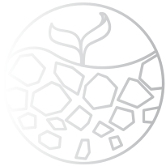
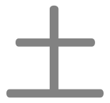
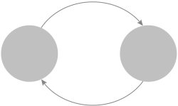
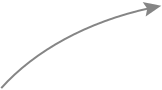
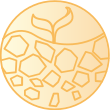
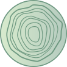

Earth
 Earth is the element of harvest time, abundance, nourishment, fertility, and the mother to child relationship. This element is also regarded as central to balance and the place where energy becomes downward in movement, a change of seasons. It is the symbol of stability and being properly anchored. Earth’s motion is patient, reliable, logical, governed by service and duty to others, militaristic, stubborn, very energetic.
Earth ‘governs’ the Chinese Zodiac signs Dragon, Rat, and Ox. Earth is the central balance of the elements and can lend qualities to all 12 animals as well.
Emotion
Positive
Joy
Negative
Anxiety/h3>
Earth Personality Type
Archetype: The Mediator and Peacemaker/Human Resources

Most Earth-type people are trustful, steady, loyal and responsible. They are honest, religious, reliable, and keep their promises.
The characteristics of Earth are standing still, being slow and steady, and stationary. Therefore the Earth people don't like to move their body and change their mind too often. They are honest, trustworthy, and responsible. They also have good faith. They can sit in one position for a long time. They accept religion since they like rumination and meditation. They are slow to react. They like to collect things, and enjoy their collectables at home, but not outdoors.
People lacking Earth are selfish, insincere, and self-indulgent. They tend to ignore other people's opinions. They might take immediate advantage of others unethically. They don't care about the people around them and do not keep their promises.
People with excess Earth are stubborn, inflexible, cheap, lonely, plain and simple. They cannot keep their word either.
Cycles
The doctrine of five phases describes two cycles, a generating or creation (生, shēng) cycle, also known as "mother-son", and an overcoming or destruction (剋/克, kè) cycle, also known as "grandfather-nephew", of interactions between the phases.
Generating Cycle
Fire
 Earth
Metal
Fire creates Earth
Earth bears Metal
Overcoming Cycle
Water
Earth
Wood
Earth dams Water
Wood parts Earth
Others
Yin or Yang:
Balance of Both
Yin & Yang
Season:
Seasonal Transition
-the last 18 days of the four seasons